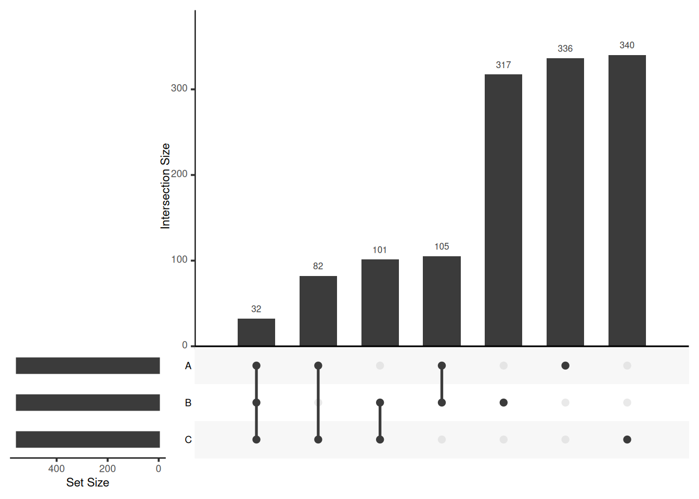
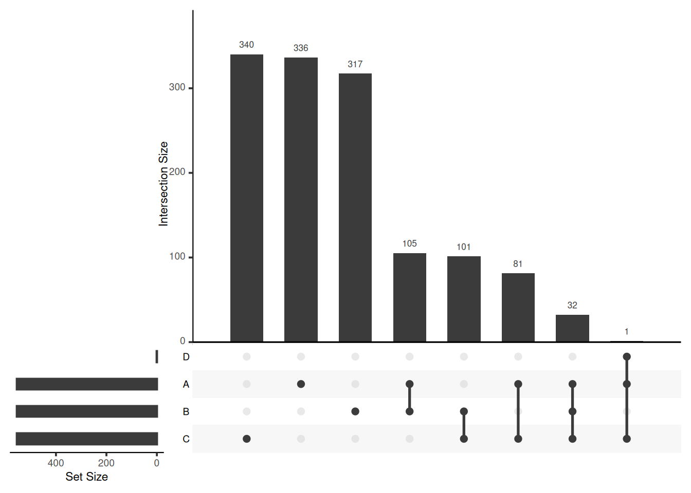

Chapter 11 Visualising biomolecular data
The goal of this chapter is to learn some additional visualisation that are widely used in biomedical data analysis, namely
- Heatmaps, including an application of the hierarchical clustering that was seen in chapter 9.
- Visualisation of intersections, in particular Venn and UpSet plots.
11.1 Heatmaps
Figure 11.1: Heatmap of the (normalised) Mulvey et al. 2015 proteomic data.

A heatmap is composed of two hierarchical clusters (one along the rows, one along the columns, leading to their re-ordering based on their similarity) and a intensity matrix. Each of these components is subject to parameters and options.
As we have seen above, the distance used for clustering can have a substantial effect on the results, which is conformed below.
Figure 11.2: Heatmap of the (normalised) Mulvey et al. 2015 proteomic data using correlation distances.

Another important argument, scale controls whether rows, columns or
none are scaled. Let’s re-use the toy data from the hierarchical
clustering section below.
Figure 11.3: Effect of scaling on the heatmap output: no scaling.

Figure 11.4: Effect of scaling on the heatmap output: scaling along the rows.
Figure 11.5: Effect of scaling on the heatmap output: scaling along the columns.

Based on the caveats above, it is essential to present and interpret heatmaps with great care.
There exists several packages that allow to produce heatmaps with
various levels of sophistication, such as heatmap.2 from the r CRANpkg("gplots") package, the Heatplus package, or
the ComplexHeatmap packages (full documentation
here),
demonstrated below.
library("ComplexHeatmap")
x <- assay(mulvey2015norm_se)
hcl <- hclust(dist(x))
cl <- cutree(hcl, k = 12)
ha1 <- HeatmapAnnotation(time = mulvey2015norm_se$times)
ha2 <- HeatmapAnnotation(boxplot = anno_boxplot(x))
ha3 <- rowAnnotation(cluster = factor(cl))
Heatmap(x,
top_annotation = ha1,
bottom_annotation = ha2,
column_names_gp = gpar(fontsize = 8),
row_names_gp = gpar(fontsize = 3)) +
ha3
Figure 11.6: An annotated heatmap produced with the ComplexHeatmap Bioconductor package.
Other powerful packages to generate and customise heatmaps are superheat and pheatmap.
Finally, the heatmaply, d3heatmap and iheatmapr packages can be used to generate interactive heatmaps.
## prepare the data
library("pRolocdata")
data(hyperLOPIT2015_se)
## interactive heatmap
library("heatmaply")
heatmaply(assay(hyperLOPIT2015_se)[1:100, ])heatmaply(assay(hyperLOPIT2015_se)[1:100, ],
RowSideColors = as.numeric(as.factor(rowData(hyperLOPIT2015_se)$markers[1:100])))See also A tutorial in displaying mass spectrometry-based proteomic data using heat maps (Key 2012Key, M. 2012. “A Tutorial in Displaying Mass Spectrometry-Based Proteomic Data Using Heat Maps.” BMC Bioinformatics 13 Suppl 16: S10. https://doi.org/10.1186/1471-2105-13-S16-S10.), that applies to any type of omics data (not only proteomics) for a useful reference.
11.2 Visualising intersections between sets
Computing and visualising intersections is a common task in data
analysis. Venn and Euler diagrams are popular representation when
comparing sets and their intersection. Two useful R packages to
generate such plots are
venneuler and Vennerable15 You can install Vennerable with
BiocManager::install("js229/Vennerable")..
We will use the mulvey2015norm_se feature names to generate a test data:
set.seed(123)
feat_list <- replicate(3,
sample(rownames(mulvey2015norm_se), 555),
simplify = FALSE)
names(feat_list) <- LETTERS[1:3]The Venn function from the Vennerable package takes a list as
input, and computes all possible intersections between these elements
of the list. In the output below
-
000refers to the empty set that are present in none of the element of the list; -
001is the set of items that are unique to the third element (namedC) of our list; - …
-
011is the set of items that is shared by the second (B) and third (C) element (and absent from the first one) of our list; -
111is the set of items that are shared between all elements of our list.
## A Venn object on 3 sets named
## A,B,C
## 000 100 010 110 001 101 011 111
## 0 336 317 105 340 82 101 32Each of these intersections can be accessed using through the
IntersectionSets slot.
## [1] "Q8BXZ1" "Q571H0" "Q9D1C9" "P43274" "Q0VG62" "Q8CE90-4"
## [7] "Q99LI8" "P30416" "Q8C7X2-2" "Q9JI13-2" "Q8BJF9" "Q6P5E4"
## [13] "P51881" "Q8BGT7" "Q8K2F0" "P25206" "Q921E6-3" "Q8BWR8"
## [19] "Q76MZ3" "Q9WV32" "O70493" "Q62393-2" "Q9JIH2" "Q9DCT2"
## [25] "Q80U49" "P68254-2" "Q01730" "Q9DBE9" "Q9Z2U0" "Q91WM2"
## [31] "Q8BNU0" "Q8BRN9" "Q08024-2" "Q8R1Q8" "Q921F4" "P60898"
## [37] "Q64213-2" "P36552" "P61358" "P83887" "P61957" "Q05816"
## [43] "Q9QXA5" "Q52KI8-2" "Q62422" "Q3UMF0-4" "Q9EQQ9" "Q1PSW8"
## [49] "Q61183-4" "P08752" "Q64511" "P83940" "Q60854" "Q91W97"
## [55] "P24788" "Q6ZWN5" "Q9CQ62" "Q9D7H3" "Q8BGW1-3" "O88508"
## [61] "Q6PAR5-5" "P10107" "Q99L04" "Q8JZQ9" "Q922S8" "Q8C878"
## [67] "Q62241" "Q9CZ15" "P57780" "P62897" "Q9CY62" "Q8R1N0"
## [73] "P63085" "Q569Z5" "Q9D0E1-2" "Q8BMP6" "Q8CJ26" "Q9R0P5"
## [79] "Q64373-2" "Q61464-4" "Q7TQK4" "P61982" "P51150" "P84091"
## [85] "Q80XI4" "Q8CFV9" "Q8BTZ4-2" "Q8R326-2" "Q811J3" "Q9D753"
## [91] "P51410" "Q9D1H7" "Q9CXK8" "Q99LB6-2" "P62862" "Q9WVB0"
## [97] "P62267" "O88322" "Q923E4" "O54984"
## [ reached getOption("max.print") -- omitted 5 entries ]And finally, the Venn object can directly be plotted (albeit with a
suspicious set of colours) with
Figure 11.7: A Venn diagram representing the size of all intersections of the three elements of out feat_list input.
Venn diagrams are however limited to two to three, possibly four sets. The UpSetR package is a great solution when more sets need to be compared. The UpSetR visualises intersections of sets as a matrix in which the rows represent the sets and the columns represent their intersection sizes. For each set that is part of a given intersection, a black filled circle is placed in the corresponding matrix cell. If a set is not part of the intersection, a light grey circle is shown. A vertical black line connects the topmost black circle with the bottom most black circle in each column to emphasise the column-based relationships. The size of the intersections is shown as a bar chart placed on top of the matrix so that each column lines up with exactly one bar. A second bar chart showing the size of the each set is shown to the left of the matrix.
We will first make use of the fromList function to convert our list
to a UpSetR compatible input and then generate the figure:





## Add set D with a single intersection
upset_in_4 <- upset_in
upset_in_4$D <- 0
upset_in_4[1, "D"] <- 1
head(upset_in_4)## A B C D
## 1 1 0 1 1
## 2 1 0 0 0
## 3 1 1 1 0
## 4 1 1 0 0
## 5 1 0 0 0
## 6 1 1 0 0
 Visualising intersections with
Visualising intersections with UpSetR shines with more than 4 sets,
as Venn diagrams become practically useless.
There is also an UpSetR online app: https://gehlenborglab.shinyapps.io/upsetr/
► Question
Generate a bigger dataset containing 10 sets. Try to generate Venn and upset diagrams as shown above.
When the number of sets become larger, the options above, as well as
nsets, the number of sets (default is 5) and nintersects, the
number of intersections (default is 40) become useful.
► Solution
Page built: 2024-12-09 using R version 4.4.1 (2024-06-14)